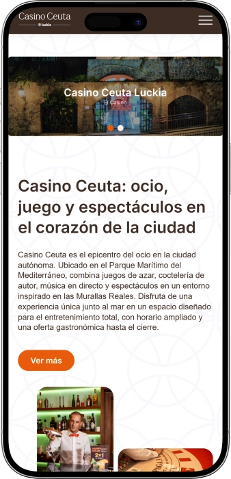

Oferta exclusiva de bienvenida de
Oferta exclusiva de bienvenida de
Vive la Emoción del Casino en el Corazón de Ceuta
Los mejores casinos
Detalles de bonificación
Casino
Bonos
Rate
Giros gratis
Más info
Conseguir
Ventajas
- ¿Buscas entretenimiento de calidad en Ceuta? Gran Casino Ceuta ofrece experiencias únicas con juegos en vivo, máquinas modernas y ambiente exclusivo junto al mar. Descubre por qué somos tu mejor opción:
-
Sala de máquinas con más de 100 tragaperras de última generación
-
Mesas de póker, ruleta y blackjack con crupieres profesionales
-
Ubicación privilegiada en Avda. Compañía del Mar frente al Mediterráneo
-
Bar-cafetería abierto durante todo el horario de juego
-
Atención personalizada con soporte telefónico y WhatsApp para eventos
-
Horarios extendidos los fines de semana hasta las 04:00h
- Únete a miles de jugadores que disfrutan de nuestras instalaciones renovadas. Nuestro equipo está siempre disponible para garantizarte la mejor experiencia de juego en Ceuta.
Gran Casino de Ceuta App


Sobre Gran Casino Ceuta
Gran Casino Ceuta es un referente del entretenimiento en la ciudad autónoma desde hace décadas. Ubicados en primera línea de mar, combinamos tradición y modernidad ofreciendo experiencias únicas. Contamos con proveedores líderes de la industria del juego.
- Ampliación de la sala de máquinas con tecnología de última generación
- Incorporación de mesas de juego en vivo con crupieres profesionales
- Renovación completa de instalaciones con diseño contemporáneo
- Lanzamiento de servicios de eventos privados y celebraciones
Operamos bajo estrictas regulaciones del juego en España con certificaciones de seguridad. Todas nuestras máquinas y mesas cumplen normativas internacionales. Garantizamos transparencia absoluta y juego responsable en cada partida. Continuamos innovando nuestras ofertas de entretenimiento y servicios. El compromiso con la excelencia y la satisfacción del cliente sigue siendo nuestra prioridad. Visítanos y descubre por qué somos la elección favorita en Ceuta.
Guía Completa de Juegos de Casino en Ceuta
Guía Completa de Juegos de Casino en Ceuta
Gran Casino Ceuta representa una de las experiencias de entretenimiento más completas disponibles en la ciudad autónoma. Ubicados estratégicamente en la Avenida Compañía del Mar, ofrecemos instalaciones modernas que combinan la emoción del juego tradicional con las comodidades contemporáneas que los visitantes esperan. Nuestra oferta incluye desde máquinas tragaperras de última generación hasta mesas de juego en vivo operadas por profesionales experimentados. En esta guía detallada exploraremos todo lo que necesitas saber sobre nuestras instalaciones, juegos, servicios y experiencias únicas.
Máquinas Tragaperras: Variedad y Tecnología
Nuestra sala de máquinas constituye el corazón palpitante de Gran Casino Ceuta, operando desde las 12:00h hasta las 02:00h entre semana, con horario extendido hasta las 04:00h los viernes y sábados. Contamos con más de cien máquinas tragaperras cuidadosamente seleccionadas que abarcan diferentes temáticas, niveles de apuesta y mecánicas de juego. Desde las clásicas máquinas de frutas hasta las modernas video slots con gráficos en alta definición, cada equipo está diseñado para ofrecer experiencias inmersivas. Las máquinas se actualizan regularmente incorporando los últimos lanzamientos de fabricantes reconocidos internacionalmente.
La tecnología implementada en nuestras máquinas garantiza aleatoriedad certificada y cumplimiento estricto con las regulaciones españolas del juego. Cada equipo está conectado a sistemas de gestión centralizados que monitorean el rendimiento y aseguran operaciones transparentes. Los jugadores pueden disfrutar de diferentes denominaciones adaptadas a todos los presupuestos, desde apuestas mínimas para principiantes hasta límites más elevados para jugadores experimentados. El ambiente de la sala combina iluminación ambiental, sonido envolvente y espacios cómodos diseñados específicamente para sesiones prolongadas de entretenimiento.
- Máquinas clásicas de rodillos: Perfectas para quienes aprecian la experiencia tradicional del casino, estas máquinas ofrecen mecánicas simples con símbolos reconocibles como frutas, campanas y sevens. Ideales para principiantes que desean familiarizarse con las dinámicas básicas sin complejidades adicionales.
- Video slots temáticas: Equipos de cinco rodillos con gráficos cinematográficos que transportan a mundos de fantasía, aventuras egipcias, mitología griega o expediciones espaciales. Incluyen funciones bonus, giros gratis, multiplicadores y rondas interactivas que aumentan exponencialmente la emoción del juego.
- Máquinas progresivas: Conectadas en red para acumular jackpots que crecen con cada apuesta realizada hasta que un afortunado jugador gana el premio acumulado. Estas máquinas ofrecen las recompensas más significativas disponibles en la sala con premios que pueden cambiar vidas.
- Slots multi-línea: Permiten activar múltiples líneas de pago simultáneamente aumentando las probabilidades de combinaciones ganadoras. Perfectas para jugadores que buscan acción constante con frecuentes premiaciones pequeñas y medianas durante sesiones extendidas.
- Máquinas con pantallas táctiles: La última generación de equipos incorpora tecnología touchscreen intuitiva que facilita la navegación entre opciones, ajuste de apuestas y activación de funciones especiales con simples gestos. La interfaz moderna resulta especialmente atractiva para jugadores familiarizados con dispositivos móviles.
Juegos de Mesa: Emoción con Crupieres Profesionales
La sala de juegos de Gran Casino Ceuta opera desde las 20:00h hasta las 02:00h, extendiéndose hasta las 04:00h durante fines de semana. Aquí los visitantes encuentran la auténtica atmósfera del casino clásico con mesas operadas por crupieres experimentados que garantizan partidas profesionales y ambiente sofisticado. Las mesas de póker constituyen una de nuestras especialidades más populares, atrayendo tanto a jugadores casuales como a participantes serios que buscan desafíos estratégicos. Además del póker, ofrecemos ruleta europea, blackjack y otras variantes que satisfacen diferentes preferencias y niveles de habilidad.
Nuestros crupieres reciben formación continua en técnicas de juego, atención al cliente y gestión de mesas para asegurar experiencias impecables. Cada profesional conoce perfectamente las reglas, estrategias comunes y etiqueta apropiada de los juegos que supervisan. La interacción humana que caracteriza los juegos de mesa crea dinámicas sociales únicas imposibles de replicar con máquinas, fomentando conversaciones, camaradería y momentos memorables entre participantes. Las mesas están equipadas con materiales de primera calidad incluyendo cartas profesionales, fichas auténticas y superficies diseñadas específicamente para cada juego.
- Póker Texas Hold'em: La variante más popular mundialmente donde cada jugador recibe dos cartas privadas y comparte cinco cartas comunitarias. Las apuestas estratégicas, faroles calculados y lectura psicológica de oponentes convierten cada mano en un duelo mental fascinante que trasciende la suerte pura.
- Ruleta europea: El icónico juego con rueda numerada del 0 al 36 donde los jugadores apuestan a números individuales, grupos, colores o secciones específicas. La ventaja de la casa es menor que en variantes americanas gracias a la ausencia del doble cero, ofreciendo mejores probabilidades a largo plazo.
- Blackjack clásico: El objetivo consiste en sumar 21 puntos o acercarse sin pasarse superando la mano del crupier. Las decisiones estratégicas sobre pedir carta, plantarse, doblar apuesta o dividir pares ofrecen margen para habilidad que reduce significativamente la ventaja del casino cuando se aplican estrategias óptimas.
- Torneos especiales: Organizamos regularmente competiciones de póker con estructuras de premios garantizados que atraen participantes de toda la región. Estos eventos crean atmósferas electrizantes con oportunidades de ganar premios sustanciales mientras se compite contra jugadores de diversos niveles.
Servicios Complementarios y Comodidades
Gran Casino Ceuta trasciende la oferta exclusiva de juego incorporando servicios complementarios diseñados para maximizar la comodidad y satisfacción de nuestros visitantes. El bar-cafetería opera simultáneamente con la sala de máquinas desde las 12:00h hasta las 02:00h, extendiendo horarios durante fines de semana. Aquí los clientes disfrutan de bebidas variadas, cafés de calidad, cócteles preparados profesionalmente y selección de aperitivos. El ambiente del bar permite relajarse entre sesiones de juego, socializar con otros visitantes o simplemente disfrutar de las vistas al Mediterráneo desde nuestra ubicación privilegiada frente al mar.
Las instalaciones están diseñadas considerando accesibilidad, confort y ambiente sofisticado. La climatización mantiene temperaturas óptimas independientemente de las condiciones exteriores, mientras que la acústica equilibrada permite conversaciones cómodas sin interferencias excesivas del sonido de las máquinas. Los espacios están iluminados estratégicamente creando atmósferas acogedoras que invitan a permanecer sin generar fatiga visual. Ofrecemos conexión WiFi gratuita para quienes deseen permanecer conectados, zonas de descanso con asientos confortables y servicios sanitarios mantenidos impecablemente durante toda la operación.
- Atención personalizada: Nuestro personal multilingüe está disponible para resolver consultas, explicar reglas de juegos, asistir con transacciones y garantizar experiencias memorables. Contacta directamente al (+34) 956 52 40 11 para información general o reservas especiales.
- Organización de eventos: Disponemos de espacios y servicios para celebraciones privadas, eventos corporativos o fiestas temáticas. Contacta vía WhatsApp al (+34) 647 304 532 para coordinación de eventos personalizados con paquetes adaptados a diferentes presupuestos y necesidades específicas.
- Ubicación estratégica: Situados en Avenida Compañía del Mar sin número en el código postal 51001, disfrutamos de acceso fácil desde cualquier punto de Ceuta con disponibilidad de estacionamiento cercano y conexiones de transporte público convenientes para residentes y visitantes.
- Seguridad integral: Sistemas de vigilancia de última generación, personal de seguridad discreto pero efectivo y protocolos estrictos garantizan ambientes seguros donde los visitantes pueden concentrarse exclusivamente en disfrutar sin preocupaciones adicionales sobre pertenencias o bienestar personal.
- Programa de fidelización: Los visitantes regulares acceden a beneficios exclusivos incluyendo invitaciones a eventos especiales, promociones personalizadas y atención prioritaria. Consulta en recepción sobre cómo registrarte en nuestro programa de clientes frecuentes sin costos adicionales.
Compromiso con el Juego Responsable
En Gran Casino Ceuta entendemos que el entretenimiento debe mantenerse dentro de límites saludables sin convertirse en problema. Por ello implementamos políticas rigurosas de juego responsable alineadas con las mejores prácticas internacionales y regulaciones españolas. Nuestro personal está capacitado para identificar señales de comportamiento problemático y ofrecer asistencia discreta cuando sea necesario. Proporcionamos información visible sobre recursos de ayuda disponibles para jugadores que sientan necesidad de apoyo profesional. El acceso al casino está estrictamente restringido a mayores de edad con verificación obligatoria de identificación en todas las entradas.
Promovemos activamente el establecimiento de límites personales de tiempo y presupuesto antes de comenzar sesiones de juego. Nuestro objetivo consiste en ofrecer entretenimiento de calidad donde la diversión permanezca como prioridad absoluta sin generar consecuencias negativas. Colaboramos con organizaciones especializadas en prevención y tratamiento de ludopatía manteniendo canales de derivación cuando clientes solicitan asistencia. La autoexclusión voluntaria está disponible para quienes deseen temporalmente o permanentemente restringir su acceso a nuestras instalaciones como medida preventiva o correctiva.
- Establece presupuestos claros: Antes de visitar el casino determina una cantidad específica que puedes permitirte perder sin afectar obligaciones financieras esenciales. Considera ese dinero como costo de entretenimiento similar a entradas de cine o cenas en restaurantes, no como inversión con retorno esperado.
- Controla el tiempo dedicado: Establece límites temporales para sesiones de juego evitando que el entretenimiento consuma desproporcionadamente tu tiempo libre. Utiliza alarmas en dispositivos móviles o solicita a acompañantes que te recuerden cuando hayas alcanzado la duración planificada previamente.
- Nunca persigas pérdidas: Aceptar pérdidas como parte natural del entretenimiento resulta fundamental para mantener perspectiva saludable. Intentar recuperar dinero perdido incrementando apuestas o extendiendo sesiones típicamente agrava problemas en lugar de solucionarlos generando espirales peligrosas.
- Mantén equilibrio vital: El juego debe representar una actividad ocasional entre múltiples intereses, no el centro exclusivo de vida social o entretenimiento. Cultiva hobbies diversos, relaciones significativas y actividades que no involucren apuestas para mantener perspectiva equilibrada y bienestar integral.
- Busca ayuda tempranamente: Si experimentas dificultad controlando impulsos de juego, ocultando actividad a seres queridos o sintiendo ansiedad relacionada con apuestas, contacta inmediatamente profesionales especializados. La intervención temprana previene escaladas problemáticas facilitando recuperación exitosa.
Cómo Llegar y Planificar tu Visita
Gran Casino Ceuta goza de ubicación céntrica y accesible en la Avenida Compañía del Mar, una de las arterias principales de la ciudad que discurre paralela a la costa mediterránea. Los visitantes procedentes del centro histórico alcanzan las instalaciones mediante breve trayecto en vehículo privado, taxi o transporte público con paradas cercanas operadas regularmente. La zona circundante ofrece opciones de estacionamiento tanto en superficie como en parkings cubiertos situados a distancia caminable. Quienes visitan Ceuta desde la península ibérica o Marruecos encontrarán indicaciones claras desde los principales puntos de entrada incluyendo puertos y fronteras terrestres.
Recomendamos verificar los horarios de operación antes de planificar visitas asegurando que las áreas deseadas estén abiertas. La sala de máquinas opera desde mediodía permitiendo visitas durante tardes mientras que la sala de juegos de mesa abre exclusivamente durante veladas creando ambiente nocturno sofisticado. Los fines de semana ofrecen horarios extendidos ideales para quienes deseen experiencias más prolongadas o lleguen tardíamente desde otras localidades. No se requieren reservaciones para acceso general aunque eventos especiales o mesas privadas pueden requerir coordinación previa contactando nuestros números de atención.
- Documentación requerida: Todos los visitantes deben presentar identificación oficial vigente con fotografía (DNI, pasaporte o tarjeta de residencia) en el control de acceso. El personal verifica mayoría de edad estrictamente sin excepciones garantizando cumplimiento normativo absoluto.
- Código de vestimenta: Aunque no imponemos requisitos formales estrictos, apreciamos vestimenta casual-elegante que contribuya al ambiente sofisticado del establecimiento. Evita prendas excesivamente informales como chanclas, camisetas sin mangas o ropa deportiva que desentone con la atmósfera del casino.
- Métodos de pago: Aceptamos efectivo en euros para transacciones en mesas y máquinas. Cajeros automáticos están disponibles dentro de las instalaciones para retiros convenientes aunque recomendamos planificar presupuestos anticipadamente evitando decisiones impulsivas durante sesiones de juego activas.
- Grupos y celebraciones: Si planeas visitar con grupo grande o celebrar ocasión especial, contacta previamente al WhatsApp de eventos (+34) 647 304 532 para coordinar detalles. Podemos preparar áreas reservadas, servicios de catering personalizados y experiencias adaptadas a necesidades específicas del grupo.
- Información adicional: Para consultas generales sobre servicios, horarios especiales o condiciones particulares llama al teléfono de atención (+34) 956 52 40 11 durante horario de operación. Nuestro equipo responde gustosamente preguntas facilitando planificación efectiva de tu visita a Gran Casino Ceuta.
Gran Casino Ceuta combina tradición del juego clásico con comodidades modernas creando destino de entretenimiento único en la ciudad autónoma. Ya sea que busques emoción de máquinas tragaperras, desafíos estratégicos en mesas de póker o simplemente ambiente sofisticado para socializar, nuestras instalaciones ofrecen experiencias memorables. Te invitamos a descubrir personalmente por qué somos la elección preferida de residentes y visitantes que valoran calidad, profesionalismo y entretenimiento responsable en entorno privilegiado frente al Mediterráneo.
Proveedores de software
Métodos de Pago y Promociones en Casino Ceuta
Métodos de Pago y Promociones en Casino Ceuta
La experiencia completa en Gran Casino Ceuta incluye no solamente juegos emocionantes sino también sistemas de transacciones eficientes, promociones atractivas y servicios complementarios que enriquecen cada visita. En esta sección detallada exploraremos los métodos de pago disponibles, programas de recompensas, eventos especiales organizados regularmente y consejos prácticos para maximizar tu experiencia. Entender estos aspectos permite planificar visitas de manera más efectiva aprovechando oportunidades exclusivas diseñadas específicamente para nuestros clientes valorados.
Opciones de Pago y Transacciones Seguras
Gran Casino Ceuta facilita transacciones mediante sistemas seguros y convenientes adaptados a las preferencias de diferentes visitantes. El efectivo en euros constituye el método principal aceptado tanto en máquinas tragaperras como en mesas de juego tradicionales. Las máquinas modernas incorporan aceptadores de billetes de última generación que reconocen automáticamente denominaciones válidas facilitando inicios rápidos de sesiones sin necesidad de cambio previo. En las mesas de juego los crupieres profesionales intercambian efectivo por fichas oficiales del casino que posteriormente pueden canjearse nuevamente por dinero en las cajas ubicadas estratégicamente dentro de las instalaciones.
Para comodidad adicional, cajeros automáticos están disponibles dentro del recinto permitiendo retiros de efectivo cuando los visitantes necesiten fondos adicionales durante su estancia. Estos cajeros operan conectados a redes bancarias principales aceptando tarjetas de débito y crédito emitidas por entidades nacionales e internacionales. Las transacciones en cajeros automáticos están sujetas a comisiones estándar establecidas por entidades bancarias emisoras de tarjetas, no por el casino. Recomendamos planificar presupuestos anticipadamente para evitar decisiones financieras impulsivas durante sesiones de juego activas que puedan generar arrepentimientos posteriores o comprometer obligaciones económicas esenciales.
| Método de Pago | Disponibilidad | Tiempo de Procesamiento | Notas Adicionales |
|---|---|---|---|
| Efectivo en Euros | Todas las máquinas y mesas | Inmediato | Método principal recomendado para transacciones directas |
| Fichas del Casino | Mesas de juego exclusivamente | Intercambio instantáneo | Se adquieren en mesas y canjean en caja |
| Cajeros Automáticos (ATM) | Ubicados dentro del casino | 1-3 minutos | Sujeto a comisiones bancarias estándar |
| Tarjetas de Débito/Crédito | Solo en cajeros automáticos | Inmediato en retiro | No aceptadas directamente en máquinas o mesas |
| Cobro de Premios | Caja principal | Inmediato para montos estándar | Premios grandes pueden requerir verificación adicional |
La seguridad constituye prioridad absoluta en todas las transacciones realizadas dentro de Gran Casino Ceuta. Sistemas de vigilancia de última generación monitorean continuamente áreas de cajas y máquinas expendedoras protegiendo tanto al establecimiento como a los clientes de actividades fraudulentas. El personal de caja recibe capacitación especializada en detección de billetes falsos y procedimientos de verificación estrictos. Los visitantes pueden confiar plenamente en la integridad de todas las transacciones realizadas dentro de nuestras instalaciones reguladas bajo normativas españolas rigurosas que exigen transparencia absoluta y trazabilidad completa de operaciones financieras.
Programa de Fidelización y Beneficios Exclusivos
Los visitantes regulares de Gran Casino Ceuta acceden a programa de fidelización diseñado para recompensar lealtad y frecuencia de visitas. Al registrarte en nuestro sistema gratuito recibes tarjeta de miembro personalizada que acumula puntos automáticamente durante sesiones de juego en máquinas y mesas participantes. Estos puntos se convierten posteriormente en diversos beneficios incluyendo créditos de juego, invitaciones a eventos exclusivos, descuentos en servicios de bar-cafetería y acceso prioritario durante períodos de alta demanda. El sistema incentiva visitas regulares sin imponer obligaciones financieras adicionales ni cuotas de membresía transformando entretenimiento habitual en experiencias progresivamente más gratificantes.
Los niveles del programa de fidelización escalan basándose en actividad acumulada permitiendo que clientes frecuentes alcancen categorías premium con ventajas sustancialmente mejoradas. Miembros de niveles superiores reciben atención personalizada de gestores de cuentas dedicados, invitaciones anticipadas a torneos especiales con premios garantizados y posibilidad de participar en sorteos exclusivos no disponibles para público general. Las promociones estacionales complementan beneficios permanentes ofreciendo oportunidades temporales como multiplicadores de puntos durante fechas específicas, bonificaciones por referir nuevos miembros o paquetes especiales que combinan juego con servicios gastronómicos a tarifas preferenciales.
- Registro gratuito sin costos: Solicita tu tarjeta de miembro en recepción presentando identificación oficial vigente. El proceso toma pocos minutos y inmediatamente comienzas acumulando puntos en cada visita sin obligaciones de permanencia ni compromisos financieros adicionales más allá de tu entretenimiento habitual.
- Acumulación automática de puntos: Simplemente utiliza tu tarjeta de miembro al jugar en máquinas insertándola en lectores integrados o preséntala en mesas de juego donde crupieres registran actividad manualmente. Los puntos se acreditan automáticamente en tiempo real sin requerir reclamaciones posteriores ni procesos burocráticos complicados.
- Canje flexible de recompensas: Consulta tu saldo de puntos en terminales de autoservicio ubicados estratégicamente dentro del casino o pregunta directamente al personal de atención. Decide cuándo y cómo utilizar puntos acumulados seleccionando entre opciones de canje que mejor se adapten a tus preferencias personales y necesidades inmediatas.
- Eventos exclusivos para miembros: Recibe invitaciones regulares vía correo electrónico, SMS o notificaciones en aplicación móvil sobre torneos privados, veladas temáticas, espectáculos en vivo y celebraciones especiales reservadas exclusivamente para participantes del programa de fidelización con cupos limitados garantizando experiencias íntimas y memorables.
- Atención prioritaria personalizada: Miembros de categorías superiores disfrutan líneas de atención preferencial evitando esperas durante períodos concurridos, gestores de cuentas personales disponibles para consultas específicas y servicios de conserjería que facilitan reservaciones, coordinación de eventos y solicitudes especiales con eficiencia maximizada.
Eventos Especiales y Calendario de Actividades
Gran Casino Ceuta organiza regularmente eventos especiales diseñados para enriquecer la oferta de entretenimiento más allá de juegos tradicionales permanentes. Estos eventos incluyen torneos de póker con estructuras de premios atractivas, veladas temáticas que transforman ambientes con decoraciones y música específicas, espectáculos en vivo con artistas locales e internacionales y celebraciones de festividades importantes adaptadas a calendario cultural de Ceuta. Los eventos crean oportunidades para experiencias memorables diferenciadas de visitas rutinarias atrayendo tanto a clientes habituales como a nuevos visitantes interesados en ocasiones especiales.
Los torneos de póker representan algunos de los eventos más anticipados congregando jugadores de diversos niveles en competiciones estructuradas con buy-ins accesibles y premios garantizados. Estos torneos siguen formatos reconocidos internacionalmente incluyendo Texas Hold'em sin límite, estructuras de eliminación progresiva y mesas finales transmitidas en pantallas grandes creando atmósferas de competición profesional. Participar no requiere habilidades expertas ya que organizamos categorías para principiantes, intermedios y avanzados asegurando competiciones equilibradas donde cada jugador enfrenta oponentes de nivel comparable aumentando satisfacción general de experiencia competitiva.
- Torneos mensuales de póker: Celebrados típicamente durante fines de semana para maximizar participación, estos torneos ofrecen premios acumulados con porcentajes del pool distribuidos entre posiciones finales. Los formatos varían mensualmente incluyendo freezeouts clásicos, torneos con recompras, eventos turbo de ritmo acelerado y competiciones por equipos que fomentan colaboración estratégica.
- Veladas temáticas estacionales: Durante festividades como Carnaval, Halloween, Nochevieja y celebraciones locales ceutíes transformamos instalaciones con decoraciones elaboradas, música temática en vivo o DJ profesionales, cócteles especiales en bar-cafetería y promociones exclusivas en juegos seleccionados creando experiencias inmersivas que trascienden entretenimiento convencional del casino.
- Espectáculos y actuaciones en vivo: Programamos regularmente presentaciones de artistas incluyendo músicos, grupos tributo, humoristas y performers que actúan en áreas designadas dentro del casino. Estas actuaciones complementan actividades de juego ofreciendo entretenimiento adicional sin costos extra para visitantes presentes durante horarios de presentación.
- Celebraciones corporativas y privadas: Facilitamos organización de eventos empresariales, fiestas de cumpleaños, despedidas, aniversarios y celebraciones grupales personalizadas. Contacta nuestro equipo de eventos vía WhatsApp (+34) 647 304 532 para discutir requerimientos específicos, recibir cotizaciones detalladas y coordinar logística adaptada precisamente a visión y presupuesto de tu celebración especial.
- Sorteos y promociones sorpresa: Durante operación regular realizamos sorteos instantáneos entre visitantes presentes donde participación es automática simplemente estando en instalaciones durante períodos promocionales. Premios incluyen créditos de juego, experiencias gastronómicas, merchandising oficial y participación en torneos especiales sin requerir compras adicionales ni inscripciones previas complicadas.
Gastronomía y Experiencias Sociales
El bar-cafetería de Gran Casino Ceuta constituye espacio social fundamental donde visitantes se relajan entre sesiones de juego, celebran victorias o simplemente disfrutan de ambiente sofisticado frente al Mediterráneo. La carta incluye selección cuidadosamente curada de bebidas alcohólicas y no alcohólicas, cafés de calidad preparados por baristas experimentados, cócteles clásicos e innovadores creados por mixólogos profesionales y variedad de aperitivos que complementan perfectamente bebidas servidas. El ambiente combina elegancia casual con vistas panorámicas creando escenario ideal para conversaciones, networking o momentos de descanso tranquilos.
Los horarios del bar-cafetería coinciden con operación de sala de máquinas abriendo desde mediodía hasta altas horas de madrugada permitiendo que visitantes accedan a servicios gastronómicos durante toda su estancia. El personal de barra está capacitado en atención personalizada recordando preferencias de clientes regulares y ofreciendo recomendaciones basadas en gustos individuales. La ubicación estratégica del bar permite vigilar simultáneamente áreas de juego para quienes deseen mantener conexión visual con actividades mientras disfrutan de bebidas sin abandonar completamente la emoción del entorno del casino.
- Cócteles signature exclusivos: Nuestros mixólogos han desarrollado bebidas únicas inspiradas en temáticas del casino utilizando ingredientes premium, presentaciones espectaculares y sabores equilibrados que sorprenden paladares exigentes. Solicita la carta de cócteles especiales para descubrir creaciones no disponibles en establecimientos convencionales de Ceuta.
- Selección de cafés artesanales: Para visitantes que prefieren opciones sin alcohol ofrecemos cafés preparados con granos de origen selecto, métodos de extracción variados incluyendo espresso, americano, capuchino y bebidas frías ideales para climas cálidos mediterráneos. Complementa con repostería fresca horneada diariamente.
- Aperitivos y tapas mediterráneas: La carta gastronómica incluye opciones ligeras inspiradas en tradiciones culinarias de la región combinando influencias españolas y norteafricanas reflejando diversidad cultural característica de Ceuta. Perfectas para compartir en grupos o disfrutar individualmente sin sentirse excesivamente lleno durante sesiones de juego.
- Servicio en mesas de juego: Para comodidad máxima ofrecemos servicio directo en mesas donde personal de barra toma órdenes y entrega bebidas permitiendo que jugadores permanezcan concentrados en partidas sin interrupciones para desplazamientos innecesarios. Simplemente solicita al crupier quien coordinará atención inmediata.
- Espacios para socializar: Más allá de áreas de juego activo disponemos zonas de lounge con asientos confortables, iluminación ambiental y acústica favorable para conversaciones donde visitantes se reúnen con amistades, establecen conexiones con otros jugadores o simplemente observan actividad del casino desde perspectiva relajada sin presión de participación constante.
Consejos Prácticos para Maximizar tu Experiencia
Aprovechar plenamente todo lo que Gran Casino Ceuta ofrece requiere planificación estratégica y conocimiento de oportunidades disponibles. Visitantes informados disfrutan experiencias significativamente superiores comparadas con quienes arriban sin preparación ni comprensión de sistemas operativos. Estos consejos prácticos basados en retroalimentación de clientes regulares y personal experimentado ayudan maximizar satisfacción, optimizar presupuestos y crear memorias positivas duraderas asociadas con tus visitas a nuestras instalaciones de entretenimiento premium frente al mar Mediterráneo.
Conocer horarios específicos de diferentes áreas permite planificar visitas coincidiendo con momentos óptimos según preferencias personales. Las tardes en sala de máquinas ofrecen ambientes más tranquilos ideales para jugadores que prefieren concentración sin multitudes mientras que veladas especialmente durante fines de semana generan atmósferas energéticas con mayor actividad social atractiva para quienes buscan experiencias vibrantes. Reservar eventos especiales anticipadamente garantiza participación en actividades con cupos limitados evitando decepciones de llegar y descubrir espacios completamente ocupados sin posibilidad de inclusión de último momento.
- Regístrate en programa de fidelización inmediatamente: Incluso si planeas visitar ocasionalmente acumular puntos desde primera visita maximiza beneficios a largo plazo. El registro es gratuito, rápido y no impone obligaciones mientras que beneficios comienzan acumulándose inmediatamente sin requerir niveles mínimos de actividad para participación básica.
- Familiarízate con reglas antes de jugar: Si desconoces mecánicas específicas de juegos no dudes solicitar explicaciones a crupieres o personal de piso quienes gustosamente aclaran dudas sin presiones ni juicios. Comprender reglas completamente antes de apostar dinero real previene errores costosos y aumenta disfrute al permitir decisiones informadas estratégicamente.
- Aprovecha horarios extendidos de fin de semana: Si tu agenda lo permite visitar viernes o sábados proporciona cuatro horas adicionales de operación comparado con días entre semana. Este tiempo extra resulta especialmente valioso para visitantes procedentes de localidades distantes que desean maximizar entretenimiento durante desplazamientos menos frecuentes.
- Consulta calendario de eventos regularmente: Contacta directamente por teléfono o verifica publicaciones en redes sociales para mantenerte informado sobre torneos próximos, veladas especiales y promociones temporales. Participar en eventos añade dimensiones extras a visitas rutinarias transformando entretenimiento habitual en experiencias memorables extraordinarias dignas de compartir con amistades.
- Combina juego con gastronomía: Planifica tiempo para disfrutar ofertas del bar-cafetería integrando pausas estratégicas entre sesiones de juego. Estas interrupciones mantienen energía, previenen fatiga por concentración prolongada y ofrecen oportunidades para reflexionar sobre estrategias o simplemente relajarte apreciando vistas mediterráneas desde nuestra ubicación privilegiada en Avenida Compañía del Mar.
- Viaja con compañía cuando sea posible: Visitar acompañado multiplica diversión mediante experiencias compartidas, conversaciones sobre momentos emocionantes y apoyo mutuo durante fluctuaciones naturales de fortuna. Además grupos pueden dividirse explorando diferentes áreas simultáneamente para posteriormente intercambiar relatos creando narrativas colectivas enriquecidas desde múltiples perspectivas individuales.
Gran Casino Ceuta representa destino integral de entretenimiento donde convergen juegos emocionantes, servicios profesionales, gastronomía de calidad y eventos memorables en ubicación privilegiada frente al Mediterráneo. Desde sistemas de pago seguros hasta programas de fidelización generosos pasando por calendario dinámico de actividades especiales, cada aspecto está diseñado pensando en satisfacción máxima de visitantes. Te invitamos a explorar personalmente toda la riqueza de experiencias disponibles descubriendo por qué Gran Casino Ceuta permanece como referente indiscutible de entretenimiento premium en la ciudad autónoma. Planifica tu próxima visita aprovechando consejos compartidos y prepárate para momentos inolvidables en nuestras instalaciones.
Frequently Asked Questions
La sala de máquinas opera de 12:00h a 02:00h de domingo a jueves, extendiéndose hasta las 04:00h los viernes y sábados. La sala de juegos de mesa abre de 20:00h a 02:00h entre semana y hasta las 04:00h durante fines de semana. El bar-cafetería mantiene los mismos horarios que la sala de máquinas para tu comodidad.
No se requiere membresía para acceder a Gran Casino Ceuta. Únicamente necesitas presentar identificación oficial vigente con fotografía (DNI, pasaporte o tarjeta de residencia) que certifique mayoría de edad. Sin embargo, recomendamos registrarte gratuitamente en nuestro programa de fidelización para acumular puntos y acceder a beneficios exclusivos desde tu primera visita.
Ofrecemos más de cien máquinas tragaperras con temáticas variadas desde clásicas de frutas hasta video slots modernas con funciones bonus. En la sala de juegos encontrarás mesas de póker Texas Hold'em, ruleta europea, blackjack clásico y otras variantes operadas por crupieres profesionales. Organizamos también torneos especiales regularmente con premios garantizados.
Aceptamos efectivo en euros como método principal tanto en máquinas como en mesas de juego. Disponemos de cajeros automáticos dentro del casino para retiros convenientes con tarjetas de débito y crédito de redes bancarias principales. En mesas de juego intercambiamos efectivo por fichas oficiales que posteriormente puedes canjear en caja. Todos los premios se pagan en efectivo inmediatamente.
Sí, facilitamos organización de eventos corporativos, fiestas de cumpleaños, despedidas y celebraciones grupales personalizadas. Nuestro equipo especializado coordina todos los detalles incluyendo espacios reservados, catering personalizado y experiencias adaptadas a tu presupuesto. Contacta vía WhatsApp al (+34) 647 304 532 para discutir requerimientos específicos y recibir cotización detallada.
Gran Casino Ceuta está ubicado en Avenida Compañía del Mar sin número, código postal 51001, en primera línea de mar. Es accesible desde el centro de Ceuta en breve trayecto por transporte público, taxi o vehículo privado. La zona ofrece opciones de estacionamiento cercano. Si viajas desde fuera de Ceuta encontrarás indicaciones claras desde puertos y fronteras terrestres principales.
Contamos con bar-cafetería que opera durante los mismos horarios que la sala de máquinas ofreciendo bebidas variadas, cafés artesanales, cócteles preparados por mixólogos profesionales y selección de aperitivos mediterráneos. Puedes disfrutar de vistas al Mediterráneo desde el bar o solicitar servicio directo en mesas de juego para mayor comodidad sin interrumpir tus partidas.
Absolutamente. Implementamos políticas estrictas de juego responsable alineadas con regulaciones españolas y mejores prácticas internacionales. Nuestro personal está capacitado para identificar comportamientos problemáticos y ofrecer asistencia. Proporcionamos información visible sobre recursos de ayuda profesional y facilitamos autoexclusión voluntaria cuando clientes lo solicitan para protección personal.